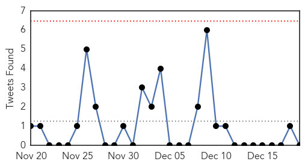
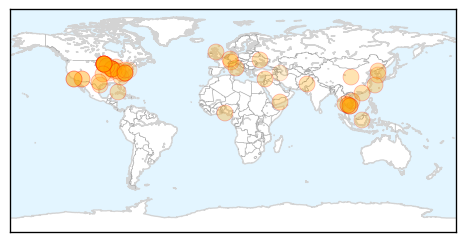
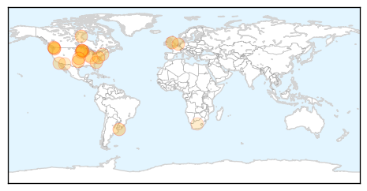

Unknown
30-Day Web Trend
0 alerts, 0 warnings

30-Day Twitter Trend
0 alerts, 0 warnings

Article Locations

Article Confidences

Top Articles:
- 0.989
- WCAX.COM Local Vermont News, Weather and Sports-
- 0.984
- HIV Outbreak Causes Panic Over A Cambodia Village: 106 Tests Positive Of HIV Due To Unlicensed Medical Practitioner Re-using Needles During Treatment : HEADLINES : Youth Health Magzine
- 0.975
- Winona Health implementing extra precautions to prevent spread o
- 0.958
- Flu Spreading Across Northern Michigan
- 0.945
- Flu is now widespread
- 0.940
- Investigation into ERI C-diff ‘cluster’ continues
- 0.925
- Heath sophomore died of flu
- 0.922
- New tick-borne virus discovered after the death of Kansas man
- 0.917
- Chicago Tribune
- 0.917
- Chicago Tribune
- 0.917
- Chicago Tribune
- 0.917
- Chicago Tribune
- 0.917
- Chicago Tribune
- 0.917
- Chicago Tribune
- 0.917
- Chicago Tribune
- 0.917
- Chicago Tribune
- 0.917
- Chicago Tribune
- 0.917
- Chicago Tribune
- 0.917
- Chicago Tribune
- 0.917
- Chicago Tribune
- 0.917
- Chicago Tribune
- 0.917
- Chicago Tribune
- 0.917
- Chicago Tribune
- 0.917
- Chicago Tribune
- 0.917
- Chicago Tribune
- 0.917
- Chicago Tribune
- 0.917
- Chicago Tribune
- 0.917
- Chicago Tribune
- 0.917
- Chicago Tribune
- 0.917
- Chicago Tribune
- 0.917
- Chicago Tribune
- 0.914
- CONSUMER ALERT: 3 people now sick in Wisconsin due to listeria o
- 0.913
- UPDATE: Study not going ahead
- 0.910
- The world windows to Thailand
- 0.904
- Cambodia orders probe into mass HIV infection
- 0.894
- Minnesota Health, Agriculture Officials Investigate Listeria Outbreak Linked to Caramel Apples
- 0.878
- Two Minnesota deaths tied to contaminated caramel apples
- 0.866
- Turkey issues arrest warrant for Muslim cleric Gulen
- 0.860
- Two deaths in Minnesota tied to tainted caramel apples -officials
- 0.858
- Toss Out Your Caramel Apples
- 0.846
- Post Office employee contracts TB
- 0.840
- Jaundice spreads in Kangra
- 0.839
- Prepackaged Caramel Apples Linked To 5 Deaths
- 0.827
- Cambodian PM orders probe into mass HIV infection – BorneoPost Online
- 0.806
- Pet Rat's Scratch Kills Boy, CDC Warns of 'Rat-Bite Fever' Risks : News : Headlines & Global News
- 0.770
- Minnesota links caramel apples, 2 listeria deaths
- 0.767
- Caramel apple deaths: Listeria kills 4 and 28 ill, linked to seasonal treat
- 0.766
- Listeria in caramel apples kills 2 in Minnesota
- 0.762
- Prepackaged caramel apples linked to 4 deaths
- 0.760
- Prepackaged caramel apples linked to 4 deaths
Showing top 50 articles...
Top Tweets:
-
No tweets found for Dec 19, 2014
Influenza
30-Day Web Trend
1 alerts, 0 warnings

30-Day Twitter Trend
2 alerts, 0 warnings

Article Locations
Article Confidences

Top Articles:
- 0.998
- First reported flu deaths include woman in Snohomish County
- 0.996
- The Flu Virus Is Widespread In Georgia, Shuts Down Entire Polk County School System
- 0.987
- Flu death reported in Stephens County
- 0.979
- Influenza, other illnesses hit some western Minnesota schools hard
- 0.977
- Avian Flu Never Seen Before In North America Shows Up In B.C.
- 0.977
- Avian flu confirmed in wild birds in Wash, Ore
- 0.973
- B.C. avian flu virus related to lethal strain in Asia
- 0.964
- Tri-City United experiencing large number of absences due to illness
- 0.956
- CDC: Flu is Widespread in 29 States - Story
- 0.917
- Vaccinations recommended during peak flu season
- 0.880
- Flu cases now widespread in South Carolina
- 0.873
- Bozeman hospital acts to prevent flu spread
- 0.873
- Bozeman hospital acts to prevent flu spread : State-and-regional
- 0.820
- Flu shots No thanks better safe than sorry
- 0.817
- News, Sports, Jobs, Community - The Leader Herald
- 0.813
- Flu Widespread in 29 States, CDC Says
- 0.797
- Tips on avoiding flu
- 0.791
- USDA reports bird flu H5N8 found in Oregon poultry
- 0.770
- UPDATE: 11th farm hit with Avian flu, outbreak that started in Chilliwack enters U.S.
- 0.756
- Good Samaritan Hospital tightening visitor guidelines
- 0.654
- Child Dies of Influenza in Pima County
- 0.615
- VIDEO: Flu cases climbing in Northern Kentucky
- 0.572
- Bird Flu Found in ‘Backyard’ Oregon Poultry Flock, USDA Says
Top Tweets:
-
No tweets found for Dec 19, 2014